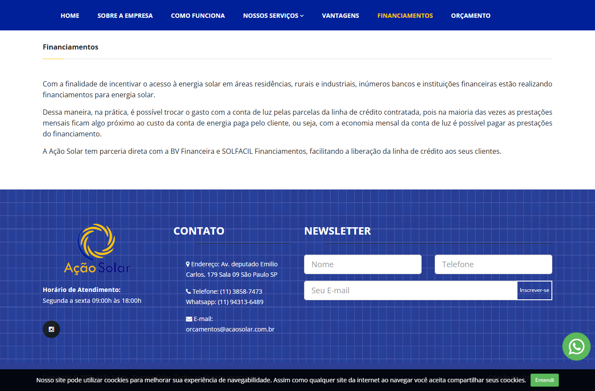
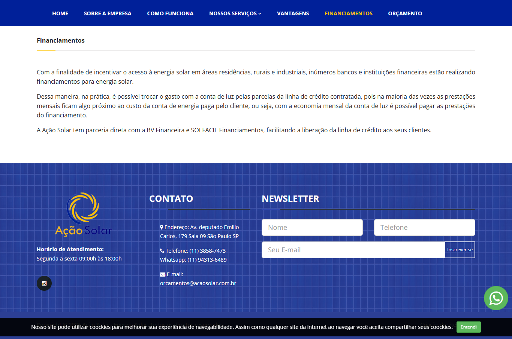

Sistema de Investigação de Marca e Identidade Online
https://www.acaosolar.com.br/a-empresa/financiamentos
Prioridade: MEDIUM · Cenário: B_AMBIGUOUS_COMMUNICATION · Revisão humana: PENDING
Trata-se de empresa integradora de energia solar ('Ação Solar') — segmento dentro do escopo de investigação de potenciais correspondentes bancários. Na seção de financiamentos, o estabelecimento declara possuir 'parceria direta com a BV Financeira e SOLFACIL Financiamentos, facilitando a liberação da linha de crédito aos seus clientes' [E-TXT-002]. Embora faça apenas menção textual em conjunto com outra financeira e sem utilizar o logotipo do banco, o site omite completamente sua razão social, seu CNPJ e qualquer aviso formal sobre sua condição de correspondente bancário no País (Res. CMN 4.935/2021), enquadrando-se no cenário B (B_AMBIGUOUS_COMMUNICATION / REVIEW_REQUIRED). [Revisor: CONFIRM] A evidência confirma tratar-se de uma empresa comercial integradora de energia solar ('Ação Solar') que, em sua página dedicada a financiamentos, declara possuir 'parceria direta com a BV Financeira e SOLFACIL Financiamentos, facilitando a liberação da linha de crédito aos seus clientes' (E-TXT-002, E-FOLD). Ao mesmo tempo, o site omite completamente a razão social, o CNPJ, a declaração de condição de correspondente bancário e os dados de ouvidoria exigidos pela Resolução CMN nº 4.935/2021 (E-FTR, E-SHOT-FULL). Portanto, mantém-se a classificação REVIEW_REQUIRED com prioridade MEDIUM.


| Ref | Tipo | Local | Conteúdo |
|---|---|---|---|
| E-URL | domain | url | URL final: https://www.acaosolar.com.br/a-empresa/financiamentos (domínio: www.acaosolar.com.br) |
| E-DISC-001 | text | search_index | Índice de busca (grounding): acaosolar.com.br — **URL:** `https://acaosolar.com.br` | **Uso da Marca:** Na seção de financiamento do site, utiliza o nome da instituição para afirmar que *"A Ação Solar tem parceria direta com a BV Financeira e SOLFACIL Financiamentos, facilitando a liberação da linha de crédito aos seus clientes"* | Deputado Emílio Carlos, 179, São Paulo/SP), mas **omite** o CNPJ, a razão social completa e qualquer aviso formal sobre atuação como correspondente bancário nos termos do Banco Central |
| E-SHOT-VIEWPORT | screenshot | viewport | evidence\C32e30d42dc\attempt-1\viewport.png (sha256 2192d9c8bde01d7b…) |
| E-SHOT-FULL | screenshot | page | evidence\C32e30d42dc\attempt-1\fullpage.png (sha256 2084708a86dd3f1a…) |
| E-TITLE | title | head | Financiamentos |
| E-META-1 | meta | head | description: |
| E-META-2 | meta | head | author: Wip Sites - Desenvolvimento Web |
| E-CANONICAL | meta | head | https://www.acaosolar.com.br/a-empresa/financiamentos |
| E-HEAD-1 | heading | page | CONTATO |
| E-HEAD-2 | heading | page | NEWSLETTER |
| E-FOLD | text | viewport (acima da dobra) | Home Sobre a Empresa Como Funciona Nossos Serviços Vantagens Financiamentos Orçamento Financiamentos Com a finalidade de incentivar o acesso à energia solar em áreas residências, rurais e industriais, inúmeros bancos e instituições financeiras estão realizando financiamentos para energia solar. Dessa maneira, na prática, é possível trocar o gasto com a conta de luz pelas parcelas da linha de crédito contratada, pois na maioria das vezes as prestações mensais ficam algo próximo ao custo da conta de energia paga pelo cliente, ou seja, com a economia mensal da conta de luz é possível pagar as prestações do financiamento. A Ação Solar tem parceria direta com a BV Financeira e SOLFACIL Financiamentos, facilitando a liberação da linha de crédito aos seus clientes. Horário de Atendimento: Segunda a sexta 09:00h às 18:00h Contato Endereço: Av. deputado Emilio Carlos, 179 Sala 09 São Paulo SP Telefone: (11) 3858-7473 Whatsapp: (11) 94313-6489 E-mail: orcamentos@acaosolar.com.br Newsletter Inscrever-se Copyright © 2026 Ação Solar - Energia Solar. Todos os direitos reservados. Criação de sites Nosso site pode utilizar coockies para melhorar sua experiência de navegabilidade. Assim como qualquer site da internet ao navegar você aceita compartilhar seus coockies. Entendi |
| E-FTR | text | footer | Horário de Atendimento: Segunda a sexta 09:00h às 18:00h CONTATO Endereço: Av. deputado Emilio Carlos, 179 Sala 09 São Paulo SP Telefone: (11) 3858-7473 Whatsapp: (11) 94313-6489 E-mail: orcamentos@acaosolar.com.br NEWSLETTER Inscrever-se Copyright © 2026 Ação Solar - Energia Solar. Todos os direitos reservados. Criação de sites |
| E-NAV | nav | header | HOME <https://www.acaosolar.com.br/> | SOBRE A EMPRESA <https://www.acaosolar.com.br/a-empresa> | COMO FUNCIONA <https://www.acaosolar.com.br/a-empresa/como-funciona> | NOSSOS SERVIÇOS <https://www.acaosolar.com.br/servicos> | VANTAGENS <https://www.acaosolar.com.br/produtos> | FINANCIAMENTOS <https://www.acaosolar.com.br/a-empresa/financiamentos> | ORÇAMENTO <https://www.acaosolar.com.br/contato> |
| E-CTA-1 | cta | footer | Inscrever-se |
| E-CTA-2 | cta | page | Entendi |
| E-CONTACT-1 | contact | page | <https://instagram.com/acaosolar.oficial> |
| E-CONTACT-2 | contact | footer | <https://instagram.com/acaosolar.oficial> |
| E-IMG-1 | image | footer (acima da dobra) | imagem alt='Ação Solar - Energia Solar' src=https://www.acaosolar.com.br/images/logo_footer-1637155140.png (250x120, acima da dobra) |
| E-IMG-2 | image | footer (acima da dobra) | imagem alt='' src=https://wipsites.com.br/logos/wipsites.svg (41x15, acima da dobra) |
| E-TXT-001 | text | page | Com a finalidade de incentivar o acesso à energia solar em áreas residências, rurais e industriais, inúmeros bancos e instituições financeiras estão realizando financiamentos para energia solar. |
| E-TXT-002 | text | page | A Ação Solar tem parceria direta com a BV Financeira e SOLFACIL Financiamentos, facilitando a liberação da linha de crédito aos seus clientes. |
| E-TXT-003 | text | page | Horário de Atendimento: |
| E-TXT-004 | text | page | Endereço: Av. deputado Emilio Carlos, 179 Sala 09 São Paulo SP |
| E-TXT-005 | text | page | Telefone: (11) 3858-7473 Whatsapp: (11) 94313-6489 |
| Dimensão | Sinal | Achado | Refs |
|---|---|---|---|
| VISUAL_IDENTITY | LEGITIMATE | A página utiliza identidade visual própria da empresa 'Ação Solar' (azul e amarelo com logotipo próprio), sem imitar o layout do Banco BV. | E-SHOT-VIEWPORT E-IMG-1 |
| DECLARED_COMMERCIAL_IDENTITY | CONFUSION | Apresenta apenas o nome fantasia 'Ação Solar' e endereço físico em São Paulo/SP, mas não informa CNPJ nem razão social em nenhuma parte da página. | E-FOLD E-FTR E-TXT-004 |
| CORRESPONDENT_TRANSPARENCY | CONFUSION | Alega parceria direta com a BV Financeira para liberação de linha de crédito aos clientes, porém omite aviso formal de atuação como correspondente bancário e dados de ouvidoria. | E-TXT-002 E-FTR E-DISC-001 |
| INSTITUTIONAL_LANGUAGE | NEUTRAL | Comunica-se em terceira pessoa como integradora de energia solar que possui parceria com a BV Financeira e a Solfácil Financiamentos. | E-TXT-001 E-TXT-002 |
| LOGO_USAGE | LEGITIMATE | Não há utilização do logotipo do Banco BV ou da BV Financeira na página, apenas menção textual no corpo do texto. | E-SHOT-VIEWPORT E-SHOT-FULL |
| SERVICE_JOURNEY | NEUTRAL | A página é informativa sobre financiamentos de energia solar, contendo menu para orçamento e formulário de newsletter, sem simulador bancário dedicado na página inspecionada. | E-NAV E-FOLD E-SHOT-FULL |
| CONTACT_CHANNELS | LEGITIMATE | Os canais de contato (telefone, WhatsApp, e-mail orcamentos@acaosolar.com.br e Instagram) estão claramente vinculados à própria empresa Ação Solar. | E-FTR E-TXT-005 E-CONTACT-1 |
| CONSUMER_CONFUSION | NEUTRAL | Não há tentativa de se passar por canal oficial do banco, mas há ausência de transparência cadastral (CNPJ) e regulatória (declaração de correspondente) na oferta de intermediação de crédito. | E-TXT-002 E-SHOT-VIEWPORT |
Trata-se de empresa integradora de energia solar ('Ação Solar') — segmento dentro do escopo de investigação de potenciais correspondentes bancários. Na seção de financiamentos, o estabelecimento declara possuir 'parceria direta com a BV Financeira e SOLFACIL Financiamentos, facilitando a liberação da linha de crédito aos seus clientes' [E-TXT-002]. Embora faça apenas menção textual em conjunto com outra financeira e sem utilizar o logotipo do banco, o site omite completamente sua razão social, seu CNPJ e qualquer aviso formal sobre sua condição de correspondente bancário no País (Res. CMN 4.935/2021), enquadrando-se no cenário B (B_AMBIGUOUS_COMMUNICATION / REVIEW_REQUIRED).
Nenhum CNPJ ou razão social identificáveis no conteúdo coletado.
| Tipo | Valor | Ref | Contexto |
|---|---|---|---|
| domain | acaosolar.com.br | E-URL | |
| orcamentos@acaosolar.com.br | E-FOLD | ||
| social_profile | https://instagram.com/acaosolar.oficial | E-CONTACT-1 | |
| phone | (11) 3858-7473 | E-FOLD | |
| phone | (11) 94313-6489 | E-FOLD | |
| partnership_declaration | parceria | E-DISC-001 | **Uso da Marca:** Na seção de financiamento do site, utiliza o nome da instituição para afirmar que *"A Ação Solar tem parceria direta com a BV Financeira e SOLFACIL Financiamentos, facilitando a libe |
Mapeamento indicativo para apoio à auditoria. Não constitui conclusão regulatória; a decisão definitiva pertence à auditoria.
Fonte: NORMATIVE
Art. 14. O contrato de correspondente deve estabelecer: [...] II - vedação à utilização, pelo contratado, de logomarca ou de outros atributos que sejam similares aos adotados pela instituição contratante em suas agências, postos de atendimento, sítio eletrônico na internet, aplicativo ou outras plataformas de comunicação em rede;
Evidência observada: E-IMG-1 E-SHOT-FULL E-SHOT-VIEWPORT
Fonte: NORMATIVE
Art. 14. O contrato de correspondente deve estabelecer: [...] III - divulgação ao público, pelo contratado, de sua condição de prestador de serviços à instituição contratante, identificada pelo nome com que é conhecida no mercado, com descrição dos produtos e serviços oferecidos e canais de contato da instituição contratante, inclusive de sua ouvidoria, em local visível, em destaque e em formato legível, por meio de: a) sítio eletrônico do correspondente na internet, acessível na página inicial; b) aplicativo e outras plataformas de comunicação em rede do correspondente; [...]
Hipótese: Divulgação ao público da condição de prestador de serviços à contratante ausente, insuficiente ou sem destaque. A norma disciplina correspondentes contratados; o responsável não foi identificado como correspondente.
Evidência observada: E-DISC-001 E-FOLD E-FTR E-SHOT-FULL E-TXT-002 E-TXT-004
Informação faltante:
Fonte: NORMATIVE
Art. 3º O correspondente atua por conta e sob as diretrizes da instituição contratante, que assume inteira responsabilidade pelo atendimento prestado aos clientes e usuários por meio do contratado.
Evidência observada: E-CONTACT-1 E-FTR E-TXT-005
Se o responsável não for correspondente contratado, os indícios podem caracterizar uso indevido de marca ou fraude, fora do escopo da Res. 4.935: avaliar encaminhamento às áreas jurídica/segurança.
Limitações: requisitos contratuais/internos não fornecidos: mapeamento limitado ao texto normativo
Decisão: CONFIRM → REVIEW_REQUIRED / MEDIUM
A evidência confirma tratar-se de uma empresa comercial integradora de energia solar ('Ação Solar') que, em sua página dedicada a financiamentos, declara possuir 'parceria direta com a BV Financeira e SOLFACIL Financiamentos, facilitando a liberação da linha de crédito aos seus clientes' (E-TXT-002, E-FOLD). Ao mesmo tempo, o site omite completamente a razão social, o CNPJ, a declaração de condição de correspondente bancário e os dados de ouvidoria exigidos pela Resolução CMN nº 4.935/2021 (E-FTR, E-SHOT-FULL). Portanto, mantém-se a classificação REVIEW_REQUIRED com prioridade MEDIUM.
| Tema | Severidade | Questionamento | Refs |
|---|---|---|---|
| domain_attribution | MEDIUM | Responsável pela página não identificado; a conclusão sobre a marca não pode ser atribuída a um estabelecimento específico. | E-URL |
| Fonte | Consulta / hipótese | URL original | Título / trecho |
|---|---|---|---|
| grounding | Objetivo: Estabelecimentos (empresa de energia solar em São Paulo) que divulgam financiamento da marca.
Execute no Google Search as seguintes consultas (dorks):
- empresa de energia solar "São Paulo" ("Banco BV" OR "bv financeira") (financiamento OR correspondente) -site:bv.com.br -site:bancobv.com.br -site:bvfinanceira.com.br -site:bvinvestimentos.com.br -site:napista.com.br -site:bvopen.com.br -site:meufinanciamentosolar.com.br -site:votorantim.com.br -site:vam.com.br -site:reclameaqui.com.br -site:jusbrasil.com.br -site:jus.br -site:weebly.com -site:site123.me
Liste de forma abrangente as páginas públicas encontradas (até 12 resultados distintos), informando para cada uma o nome do estabelecimento/perfil, a URL e como a marca é utilizada (destaque visual, título, feirão, simulador, redes sociais e se há ou não identificação clara de CNPJ e condição de correspondente bancário). H5-establishment:empresa de energia solar:São Paulo | https://www.acaosolar.com.br/a-empresa/financiamentos | acaosolar.com.br **URL:** `https://acaosolar.com.br` | **Uso da Marca:** Na seção de financiamento do site, utiliza o nome da instituição para afirmar que *"A Ação Solar tem parceria direta com a BV Financeira e SOLFACIL Financiamentos, facilitando a liberação da linha de crédito aos seus clientes"* | Deputado Emílio Carlos, 179, São Paulo/SP), mas **omite** o CNPJ, a razão social completa e qualquer aviso formal sobre atuação como correspondente bancário nos termos do Banco Central |
Original: https://www.acaosolar.com.br/a-empresa/financiamentos
Final: https://www.acaosolar.com.br/a-empresa/financiamentos
| Artefato | Caminho | SHA-256 | Bytes |
|---|---|---|---|
| screenshot_viewport | evidence\C32e30d42dc\attempt-1\viewport.png | 2192d9c8bde01d7b487997f4e586511b9f2a95a307c8bad19c244ecfbf227d68 | 272421 |
| screenshot_full | evidence\C32e30d42dc\attempt-1\fullpage.png | 2084708a86dd3f1a3fda640fc851239bb4d509695b4d5ef074b24600edbf9b48 | 272541 |
| html | evidence\C32e30d42dc\attempt-1\page.html.txt | bcbb514d5880141d2297abf4c5546157d0c93fb66a2b857d07ac523769dfd5e7 | 14797 |
| text | evidence\C32e30d42dc\attempt-1\text.txt | 39ef4e339519b4a649a3e9b4fc74bd010b35fb69ce1424c749fd12fb74183391 | 1327 |
| page_data | evidence\C32e30d42dc\attempt-1\page.json | f2810613f1e206f9686b756f3cac95395d0cc543c8a9405135cf476c0cb9c455 | 6496 |
| Quando | De | Para | Nota |
|---|---|---|---|
| 2026-11-23T14:17:58+00:00 | DISCOVERED | QUEUED | prioritised (score 1.0) |
| 2026-11-23T14:45:26+00:00 | QUEUED | COLLECTING | |
| 2026-11-23T14:45:37+00:00 | COLLECTING | COLLECTED | |
| 2026-11-23T14:45:37+00:00 | COLLECTED | ANALYZING | |
| 2026-11-23T14:46:06+00:00 | ANALYZING | REVIEWING | |
| 2026-11-23T14:46:15+00:00 | REVIEWING | COMPLETED |